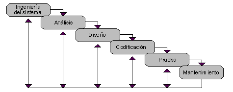

SOFTWARE
HOME
CONTACTO
SOBRE MI
SOBRE LA ASIGNATURA
SECCIÓN DE RED

El software es un conjunto de reglas o programas que dan instrucciones a un ordenador para que realice tareas específicas. También se conoce como
aplicaciones de software, paquetes de software, herramientas de software y programas de software. El software puede utilizarse para gestionar datos,
automatizar procesos y crear aplicaciones o productos informáticos. Su complejidad puede variar desde un simple programa de tratamiento de textos
hasta complejos sistemas informáticos que controlan infraestructuras críticas en sectores como la sanidad y el transporte.
Tipos de software:
- Freeware: Software gratuito, protegido por derechos de autor.
- Shareware: Uso con limitaciones.
- Software libre: Permite copiarse, modificarse y distribuirse.
- Software de código abierto: Propiedad intelectual compartida
- Software privado: No es libre, pertenece a una empresa
- Software comercial: Su finalidad es generar ganancias económicas
Metodologías de creación de software
- Metodologías tradicionales: Los ciclos de desarrollo son poco flexibles, no se permite realizar cambios y la organización del trabajo es lineal
- Metodologías ágiles: Son flexibles y ágiles, son altamente utilizadas en la actualidad y los equipos de trabajo son autónomos.
Ciclo de vida clásico de creación de software:
